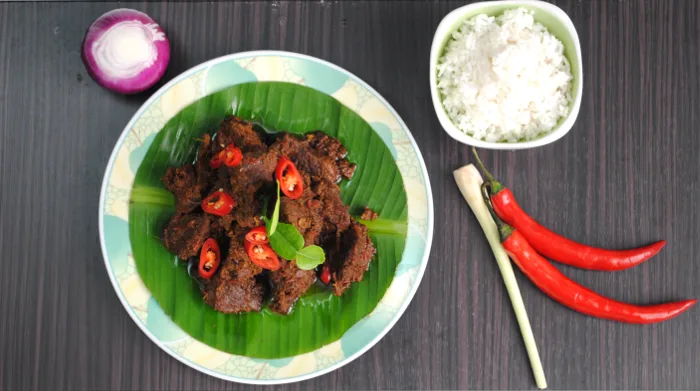

Rendang

Beef rendang is one of the original cuisines of Minangkabau descent and Sumatra’s culture. It is served at special occasions to honor guests and during festive seasons. It is a delicious Indonesian dish prepared with a myriad of herbs and spices cooking for a few hours until all the liquids have been completely absorbed by the meat. Beef rendang is best eaten with steamed rice and condiments such as fried onions and chili pieces.
Ingredients
- Beef
- Red Chili
- Garlic
- Onions
- Galangal
Steps
- Cut the beef. Cut the beef into 4 cm squares, half cm thick. Do not cut the beef too small as the meat can break into smaller pieces during cooking.
- Blend the spice. Blend all the ingredients in (B), set the blend aside.
- Bash the lemongrass. Remove the green section and the outer sheath of the lemongrass. Use only the white portion. Bash them so that the lemongrass to ensure the release of the flavor.
- Saute the spice. Heat up the vegetable oil in a wok. Saute the spice paste (B) over low heat until aromatic.
- Add coconut milk. Add the coconut milk and lemongrass into the wok.
- Add the beef. Add the beef and cook over medium heat. Bring the coconut milk to a boil.
- Simmer the beef. Once it is boiled, continue to simmer over low heat. Add water from time to time when the stew is about to dry.
- Cook until tender and turns into dark brown. Cook until the beef absorbs the flavor of the spices thoroughly and the color turns to dark brown. It will take about three hours.
Return To Home